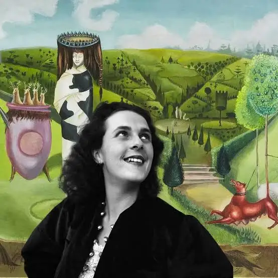
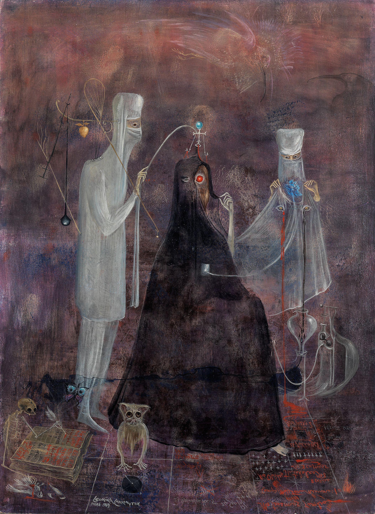
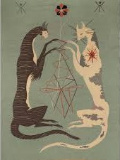
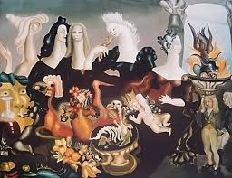
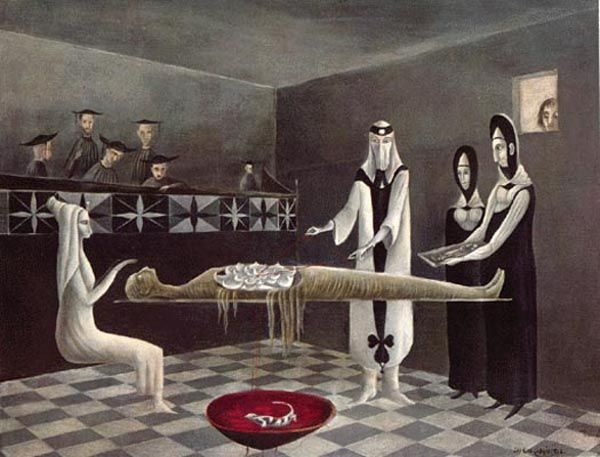
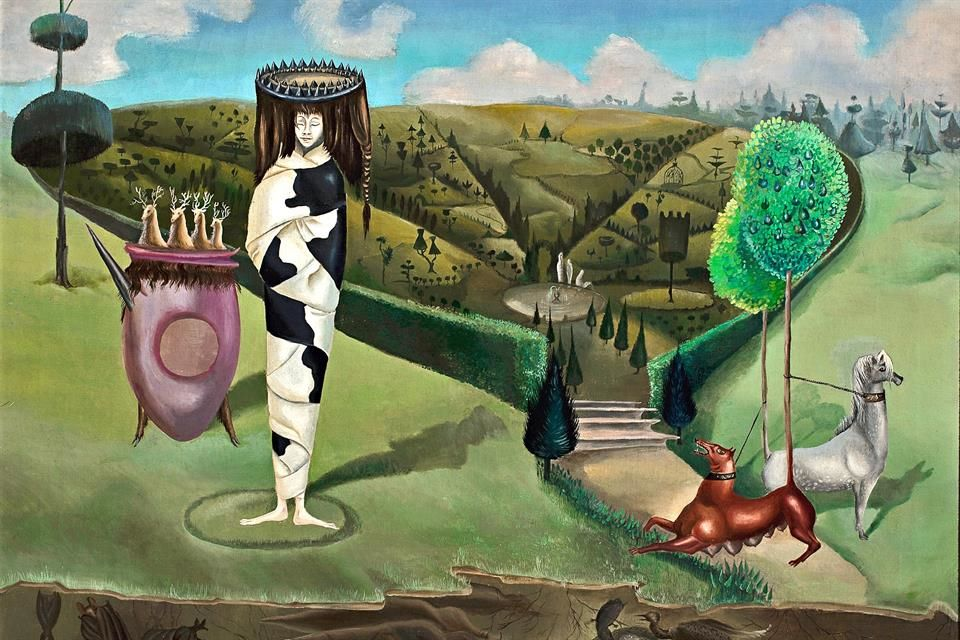
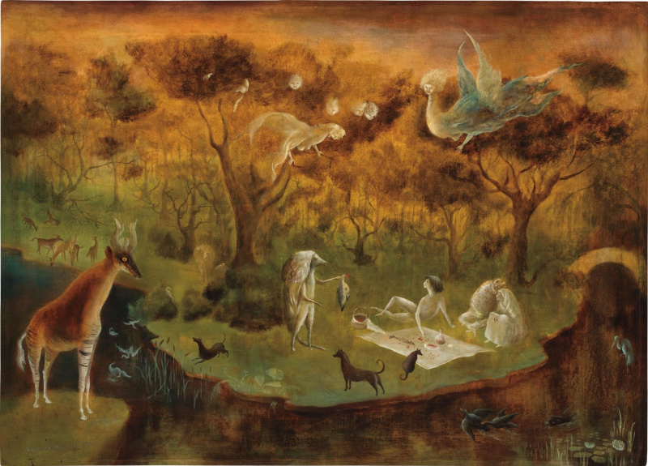
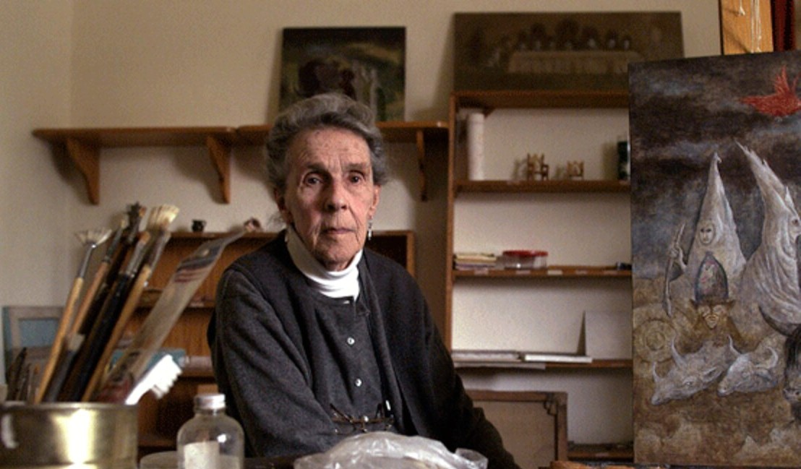

PORTADA

Biografía
Infancia y adolescencia
La infancia de Leonora Carrington se desarrolló en un ambiente de privilegio económico, pero también de rigidez social y emocional que marcaría profundamente su carácter y su obra. Nació en 1917 en Lancashire, en el seno de una familia inglesa acomodada: su padre era un poderoso industrial textil, representante de los valores conservadores de la alta sociedad británica, mientras que su madre, de origen irlandés, aportaba un mundo muy distinto, lleno de relatos mágicos, leyendas celtas y tradiciones populares que despertaron desde muy temprano la imaginación de la niña.
Desde pequeña, Leonora mostró una personalidad inconformista y difícil de encajar en el modelo femenino de su época. Mientras su familia esperaba que adoptara un comportamiento disciplinado y refinado, propio de su clase social, ella reaccionaba con rebeldía, desobediencia y una actitud crítica hacia la autoridad. Esta tensión constante con su entorno se reflejó en su trayectoria escolar: fue expulsada de varios colegios católicos e internados, incapaz de adaptarse a la estricta educación religiosa y a las normas rígidas que se le imponían.
A pesar de los intentos de su familia por moldearla, su imaginación seguía creciendo al margen de esas imposiciones. Las historias que escuchaba de su madre —pobladas de criaturas fantásticas, espíritus y mundos invisibles— se mezclaban con sus propias experiencias en las grandes casas familiares, llenas de objetos, animales y espacios que más tarde reaparecerían transformados en sus pinturas y relatos. Para Carrington, la infancia no era solo una etapa, sino una fuente permanente de imágenes y símbolos: como ella misma sugería, no inventaba, sino que recordaba.
En su adolescencia, sus padres intentaron reconducir su comportamiento enviándola al extranjero, primero a Florencia y después a París. Sin embargo, estas experiencias no lograron someter su espíritu independiente. De hecho, reforzaron su deseo de escapar del destino que su familia había trazado para ella. Un momento especialmente significativo fue su presentación en la corte del rey Jorge V en 1934, un acto social que simbolizaba su entrada oficial en la alta sociedad inglesa. Lejos de asumirlo como un honor, Carrington lo vivió como una imposición absurda y opresiva, experiencia que más tarde transformaría en una sátira literaria.
El periodo de infancia de Leonora Carrington estuvo marcado por una dualidad constante: por un lado, el mundo ordenado, autoritario y elitista de su familia; por otro, el universo libre, mágico y subversivo que ella construía a partir de su imaginación. Este conflicto no solo definió su personalidad rebelde, sino que también se convirtió en el motor de su creación artística. Sus obras posteriores —llenas de animales simbólicos, metamorfosis y escenas oníricas— pueden entenderse como una prolongación de esa infancia en la que la fantasía funcionaba como vía de escape frente a una realidad que sentía ajena.
Adultez, formación y educación e influencias artísticas
La educación de Leonora Carrington estuvo desde el inicio marcada por la estricta educación católica y conservadora inglesa que le daba su padre y la rebeldía hacia esta que Leonora mostró desde su juventud. La educación propia de la alta sociedad le desagradaba sobremanera, y sin duda la rigidez y el estricto control que ejercía su padre marcó su personalidad rebelde y libre, que luego plasmó en sus pinturas.
Al principio su educación fue en casa, donde se impregnó de la influencia Celta gracias a los relatos y leyendas que le contaban. Después fue enviada a internados como New Hall y St. Mary´s Ascot en Inglaterra, aunque fue expulsada. En 1932, es obligada a ingresar en la escuela de buenos modales para señoritas Miss Penrose School Girls, en Florencia, Italia, lo cual, irónicamente, le permitió estar en estrecho contacto con las grandes galerías de arte, pasión sobre la cual su padre se mostraba abiertamente en contra.
En 1936, gracias en buena parte a la comprensión de su madre, ingresa a estudiar arte en la Academia Ozenfant en Londres, donde descubre por primera vez el surrealismo y la obra de Max Ernst, de quien se enamorará poco después al conocerle en una fiesta en 1937, y tras lo cual tendrán un intenso romance.
Ya con su nuevo amante es donde dará rienda suelta a su creatividad surrealista, primero en París, donde conocerá al grupo de surrealistas de André Bretón, Pablo Picasso, Salvador Dalí y Joan Miró, entre otros; y después en Saint Martin d´Ardèche, donde aprenderá distintas técnicas de Ernst, sin duda pieza clave en su formación artística.
Por otra parte, la adultez de Leonora Carrington fue intensa y trágica, marcada por la guerra, la crisis personal, y que, además, se vio enormemente influenciada por su intensa relación con Max Ernst, que fue tanto amorosa como artística. Carrington y Ernst se conocieron en París, volviéndose amantes y trasladándose juntos al sur de Francia (Saint Martin d'Ardèche), donde vivieron un periodo creativo y artístico en el que se apoyaron e inspiraron mutuamente. Esta relación, además, fue la fuente de inspiración clave en varios de sus relatos, de carácter autobiográfico, que se reflejan mediante la técnica del roman à clef, es decir, una narración en la que personas y hechos reales aparecen transformados bajo una fachada de ficción, una forma de autoficción. Por ejemplo, en obras como Little Francis y Waiting, donde Carrington convierte sus vivencias sentimentales en literatura.
Cuando Max Ernst fue arrestado por los nazis, sumado a crisis mentales y personales, Carrington sufrió una fuerte crisis emocional, que plasmó en Down Below. En este texto autobiográfico narra su internamiento en un sanatorio en Santander al huir de los nazis a España, explicando su locura como una especie de descenso a los infiernos.
Después del sanatorio, logró escapar a los Estados Unidos con la ayuda del mexicano Renato Leduc; se casaron en Lisboa en 1940 para conseguir emigrar a Nueva York. Ya allí, volvió a ver brevemente a Max Ernst, pero su relación ya había terminado definitivamente. Finalmente, Carrington se estableció en México, donde vivió la mayor parte de su vida adulta, desarrollando plenamente su carrera artística y rodeándose de otros artistas como Remedios Varo.
Por todo ello, las influencias artísticas de Leonora Carrington son muy diversas y se combinan para crear un universo único, donde la libertad y la creatividad son los elementos clave. La tradición y el mundo celta, presente desde la niñez de Carrington, esa convivencia entre el mundo terrenal y el Otherworld, el mundo sobrenatural; los seres mágicos y simbólicos; lo fantástico y lo onírico… Todo ello se encuentra muy presente en la obra de Carrington, marcando sus orígenes y los relatos que despertaban su curiosidad e imaginación desde la niñez.
Además, el movimiento surrealista, con figuras como André Bretón o su amante Max Ernst, que entra en contacto con ella en su juventud, fue ideal para encajar de manera artística ese mundo onírico que tenía en mente, donde el simbolismo y las figuras antropomorfas lograban crear esa sensación del “otro mundo”.
Por último, es importante destacar la parte autobiográfica de sus obras, donde activamente plasma episodios de su vida, como los horrores de la guerra, sus conflictos emocionales y amorosos y su crisis personal. Además, en sus obras realiza una clara crítica social hacia el rol tradicional de la mujer, criticando el amor dependiente y representando a las mujeres con una identidad propia, alejadas de los estereotipos.
Exposición






Curiosidades
- Desde niña, Leonora se identificaba con los caballos. Este animal aparece constantemente en su obra como símbolo de libertad, rebeldía e independencia.
- Aunque formaba parte de la sociedad inglesa, rechazaba las normas abiertamente. Incluso se burló de su presentación en la corte del rey Jorge V cunado tenía 17 años, en 1937.
- Mantuvo una relación amorosa con el pintor surrealista Marx Ernst, quien la retrató en varias de sus obras. Pero Leonora nunca quiso que la considerara su musa y, ciertamente, siempre quiso ser reconocida como artista independiente.
- Durante la Segunda Guerra Mundial sufre una fuerte crisis estando en España. La misma es narrada en su libro Memorias de abajo (“Mémoires d’en bas” 1943).
- Además de pintar, escribió textos llenos de humor y absurdo, que podían incluir recetas extrañas y fantásticas, como si la cocina fuera un ritual mágico.
- Del mismo modo, su obra está repleta de referencias a la alquimia, la magia, el esoterismo y los sueños, elementos claves del surrealismo.
- También, animales como los gatos y los caballos aparecen frecuentemente en su obra, asociados a lo femenino, lo enigmático y lo mágico.
